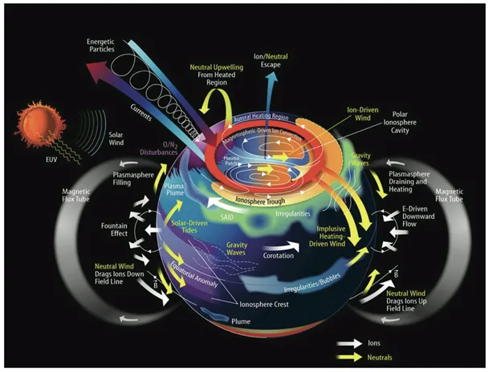
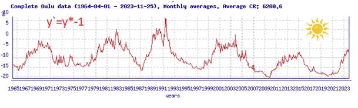
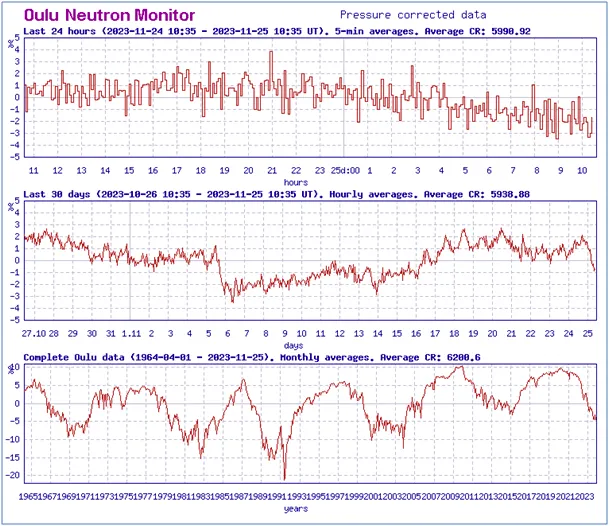
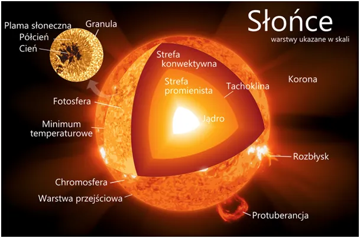
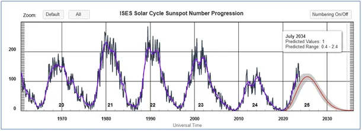

Jak fizycy przewlekają poszwy pościeli na lewą stronę używając komputerów. Rzecz o Słońcu i klimacie.
Na fińskim Uniwersytecie w Oulu, mierzy się w trybie ciągłym ilość neutronów wpadających do ziemskiej atmosfery z głębokiego kosmosu. Wykresy 2-4 ilustrują natężenie tych cząstek w ziemskiej atmosferze w trzech skalach czasowych: ostatnia doba, ostatni miesiąc i od początku pomiaru, czyli od 1965 roku.
Neutrony stanowią 90% promieniowania kosmicznego, które jest szkodliwe dla każdego życia. 9% to cząstki alfa, te są szczególnie szkodliwe, to jest analogiczne promieniowanie jonizujące jak przy wybuchu bomby atomowej.
Atmosfera, a głównie jonosfera, zatrzymują to promieniowanie, dzięki czemu możliwe jest życie na Ziemi. Tylko resztki śmiertelnych cząstek docierają na poziom gruntu. Są odpowiedzialne za starzenie się organizmów, niepożądane mutacje, w tym nowotwory i ogólnie degenerują żywe komórki.
Grubość jonosfery jest zależna od aktywności Słońca, im Słońce aktywniejsze tym jonosfera grubsza. Cykle 11 letnie Słońca są dobrze znane, widzimy jak nasza gwiazda wyrzuca potężne ilości plazmy. Jednak z racji odległości rzadko taki wybuch kieruje się w kierunku Ziemi.

Faktyczny wpływ gwiazdy na Ziemię mierzy właśnie zespół fińskich naukowców. Pomiar ilości protonów jest funkcją odwrotną do faktycznego oddziaływania Słońca na Ziemię. Dlatego pozwoliłem sobie czwarty wykres odwrócić do góry nogami, co widać na wykresie pierwszym. Tak "zaawansowane" przekształcenia matematyczne robimy przy użycia programiku Paint i myszki, przeciągając górną linie wykresu poniżej dolnej. W geometrii, mnożenie przez minus jeden, to tyle samo, co np. przewlekanie poszwy poduszki na lewą stronę.

No i mamy wykres ze "słoneczkiem", który nam mówi, że Słońce leniwie wychodzi ze swej drzemki w cyklu ponad stuletnim, jaki kiedyś opisałem.

Ostatni wykres ilości plam słonecznych mówi nam, że w miesiącach jesiennych Słońce szło na szybki wzrost, to październik rozczarował i realna aktywność znów zbliżyła się do linii czerwonej, czyli do pesymistycznej prognozy długoterminowej. Globalne oziębienie wydaje się bliskie pogłębienia, ponieważ to Słońce daje nam blisko 100% energii cieplnej. Ułamki procenta ciepła ziemi pochodzące z rozpadu promieniotwórczego w skorupie ziemskiej nie są praktycznie odczuwalne w bilansie termicznym planety.

Nic nie pomogą zaklęcia czarnoksiężników Karboreligii. Dwutlenek węgla jest czwartorzędnym elementem termiki naszej planety, po aktywności Słońca, strukturze chmur będącej skutkiem promieniowania kosmicznego, prądach morskich i parze wodnej zawartej w atmosferze. Byle do wiosny!
Paweł Klimczewski